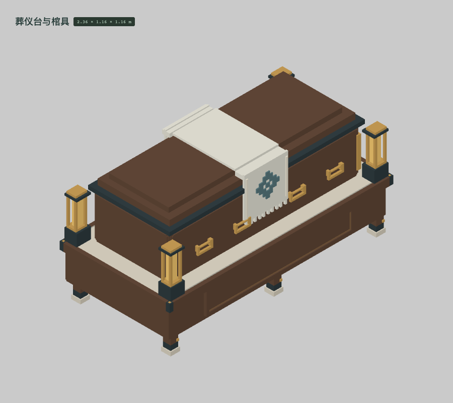
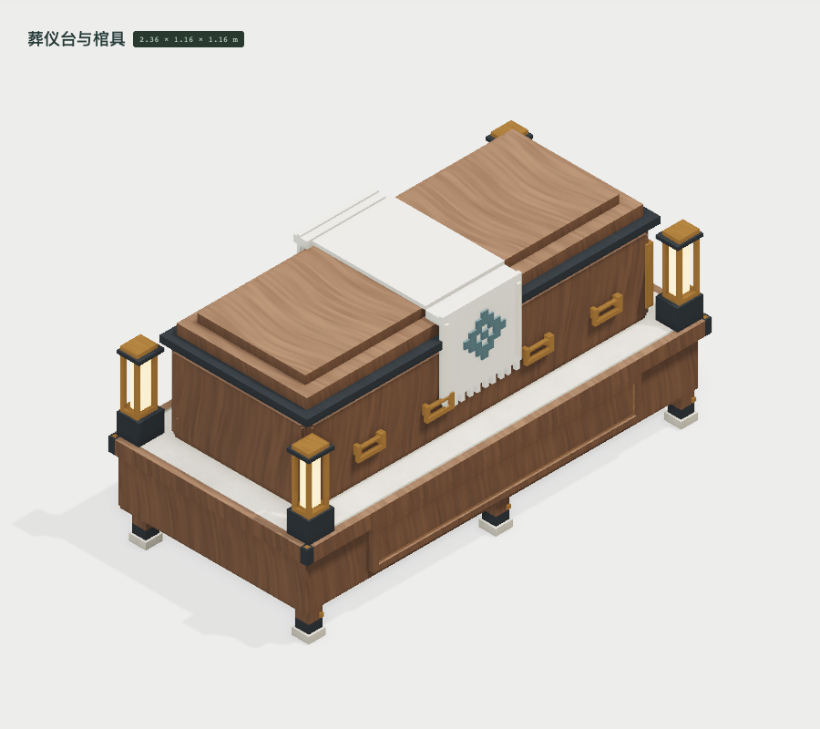
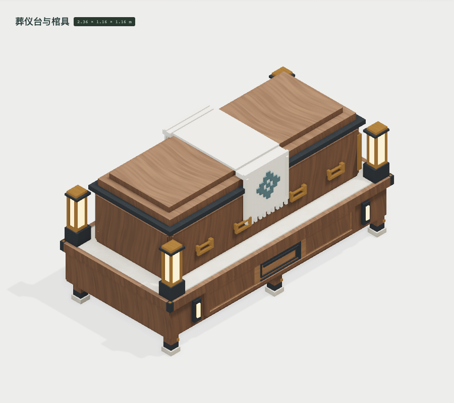
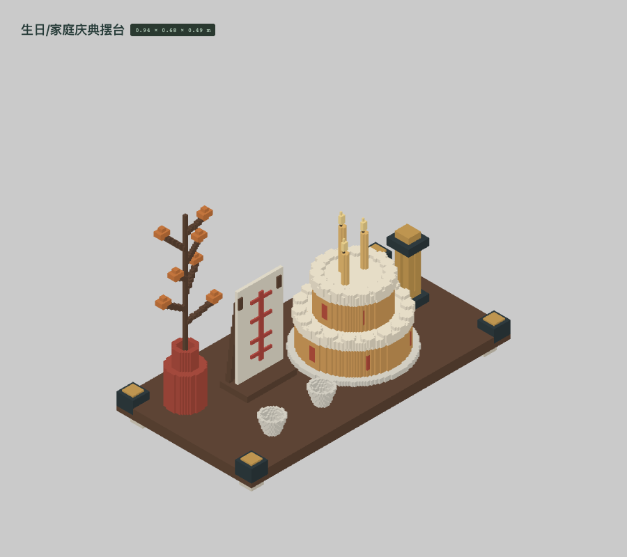
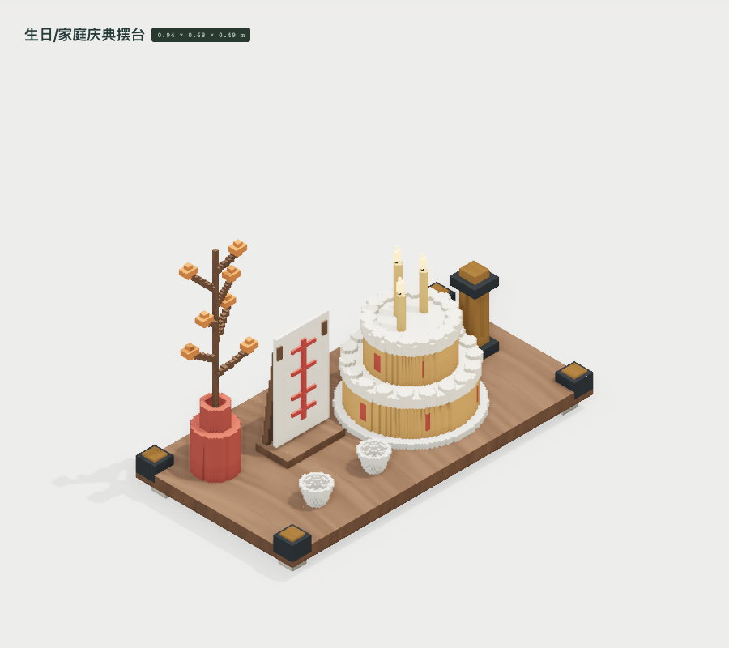
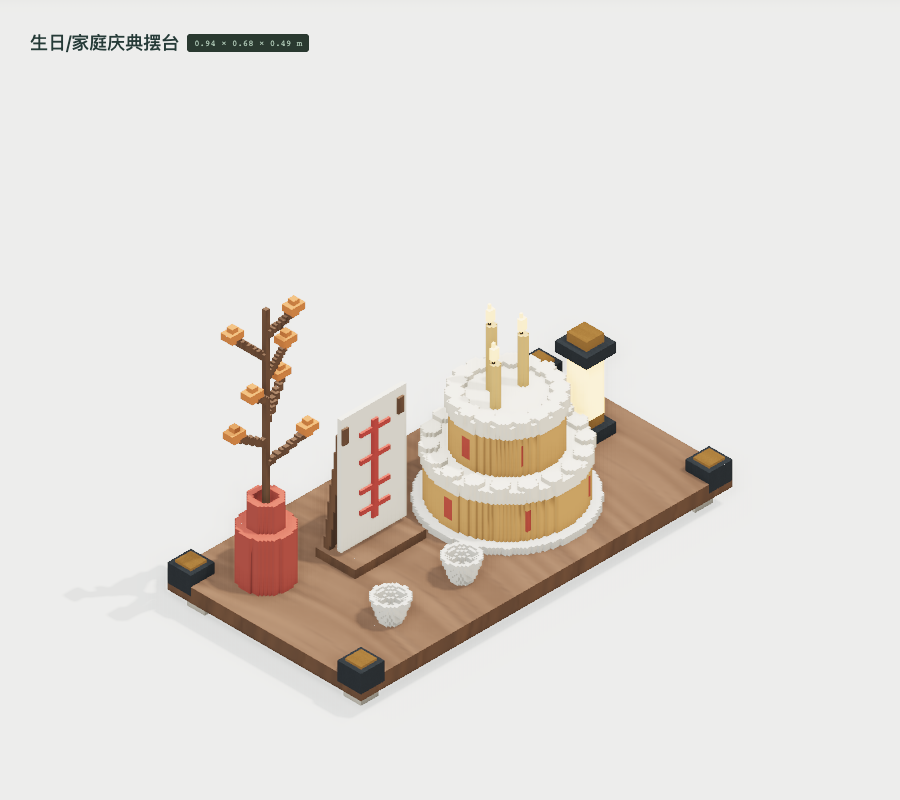

补出正面凹板内的原生回纹和竖向灯槽，保留空棺内腔与独立覆布。占用格 923,987 → 928,956；三角形 7,516 → 7,764。材质映射及参数不变。



按灯体实际宽度计算内缩量，修复小尺寸灯芯消失；蜡烛与糕体材质保持独立。占用格 269,441 → 270,117；三角形 11,602 → 11,516。材质映射及参数不变。



 修正后 · 素色验形
修正后 · 素色验形